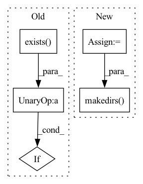

Pattern ID :34242

Before Change
def load_caption(x):
name, caption = x
subdir = str(int(int(name) / 10000 ))
if not os.path.exists(text_folder+"/"+subdir):
try:
os.makedirs(text_folder+"/"+subdir)
except:
After Change
def load_caption(x):
name, caption, text_folder = x
fid = str(int(int(name) / 10000 ))
subdir = "0"*(5-len(fid)) + fid
os.makedirs(Path(text_folder+"/"+subdir), exist_ok=True)
fp = text_folder + "/" + subdir + "/" + "0"*(9-len(str(name))) + str(name) + ".txt"
with open(fp, "w") as f:
f.write(caption)
In pattern: SUPERPATTERN
Frequency: 4
Non-data size: 5
Instances
Fragment ID: 98199930
Project Name: robvanvolt/dalle-datasets
Commit Name: eb8aefe623f98f92b95c57d401a8f8d264d51e78
Time: 2021-09-22
Author: robvanvolt@gmail.com
File Name: general/cc12m.py
M Class Name: AnonimousClass
N Class Name: AnonimousClass
M Method Name: load_caption(1)
N Method Name: load_caption(1)
M Parent Class:
N Parent Class:
M File Name: general/cc12m.py
N File Name: general/cc12m.py
M Start Line: 38
M End Line: 45
N Start Line: 20
N End Line: 25
'>
Before Change
Run example.
// Check data availability
if "training_example_data" in dataset_config_path:
if not (
os.path.exists(TRAINING_EXAMPLE_DATA_DIR)
and os.path.exists(TRAINING_EXAMPLE_SQLITE_DATA)
and os.path.exists(TRAINING_EXAMPLE_PARQUET_DATA)
):
logger.error("Training example data was not found in:")
logger.error(f" {TRAINING_EXAMPLE_DATA_DIR}")
logger.error("Please download it using:")
After Change
dataloader={"batch_size": batch_size, "num_workers": num_workers},
)
archive = os.path.join(TEST_DATA_DIR, "output", "train_model")
run_name = "dynedge_{}_example".format(config.target)
// Construct dataloaders
dataset_config = DatasetConfig.load(dataset_config_path)
dataloaders = DataLoader.from_dataset_config(
dataset_config,
**config.dataloader,
)
// Log configurations to W&B
// NB: Only log to W&B on the rank-zero process in case of multi-GPU
// training.
if rank_zero_only == 0:
wandb_logger.experiment.config.update(config)
wandb_logger.experiment.config.update(model_config.as_dict())
wandb_logger.experiment.config.update(dataset_config.as_dict())
// Train model
callbacks = [
EarlyStopping(
monitor="val_loss",
patience=config.early_stopping_patience,
),
ProgressBar(),
]
model.fit(
dataloaders["train"],
dataloaders["validation"],
callbacks=callbacks,
logger=wandb_logger,
**config.fit,
)
// Get predictions
if isinstance(config.target, str):
prediction_columns = [config.target + "_pred"]
additional_attributes = [config.target]
else:
prediction_columns = [target + "_pred" for target in config.target]
additional_attributes = config.target
results = model.predict_as_dataframe(
dataloaders["test"],
prediction_columns=prediction_columns,
additional_attributes=additional_attributes + ["event_no"],
)
// Save predictions and model to file
db_name = dataset_config.path.split("/")[-1].split(".")[0]
path = os.path.join(archive, db_name, run_name)
logger.info(f"Writing results to {path}")
os.makedirs(path, exist_ok=True)
results.to_csv(f"{path}/results.csv")
model.save_state_dict(f"{path}/state_dict.pth")
model.save(f"{path}/model.pth")
'>
Fragment ID: 98199938
Project Name: icecube/graphnet
Commit Name: c4bee7c66a687bf92d67f12fb7e7d3c38b7cbe5a
Time: 2023-01-20
Author: andreas.sogaard@gmail.com
File Name: examples/04_training/01_train_model.py
M Class Name: AnonimousClass
N Class Name: AnonimousClass
M Method Name: main(7)
N Method Name: main(7)
M Parent Class:
N Parent Class:
M File Name: examples/04_training/01_train_model.py
N File Name: examples/04_training/01_train_model.py
M Start Line: 44
M End Line: 79
N Start Line: 62
N End Line: 115
'>
Before Change
def load_image(x):
name, url = x
subdir = str(int(int(name) / 10000 ))
if not os.path.exists(image_folder+"/"+subdir):
try:
os.makedirs(image_folder+"/"+subdir)
except:
After Change
def load_image(x):
name, url, image_folder, skip_folder = x
fid = str(int(int(name) / 10000 ))
subdir = "0"*(5-len(fid)) + fid
os.makedirs(Path(image_folder+"/"+subdir), exist_ok=True)
id = subdir + "/" + "0"*(9-len(str(name))) + str(name)
try:
with Image.open(requests.get(url,
headers={"User-Agent": "Mozilla/5.0 (X11; Ubuntu; Linux x86_64; rv:72.0) Gecko/20100101 Firefox/72.0"},
'>
Fragment ID: 98199923
Project Name: robvanvolt/dalle-datasets
Commit Name: eb8aefe623f98f92b95c57d401a8f8d264d51e78
Time: 2021-09-22
Author: robvanvolt@gmail.com
File Name: general/cc12m.py
M Class Name: AnonimousClass
N Class Name: AnonimousClass
M Method Name: load_image(1)
N Method Name: load_image(1)
M Parent Class:
N Parent Class:
M File Name: general/cc12m.py
N File Name: general/cc12m.py
M Start Line: 67
M End Line: 88
N Start Line: 42
N End Line: 56